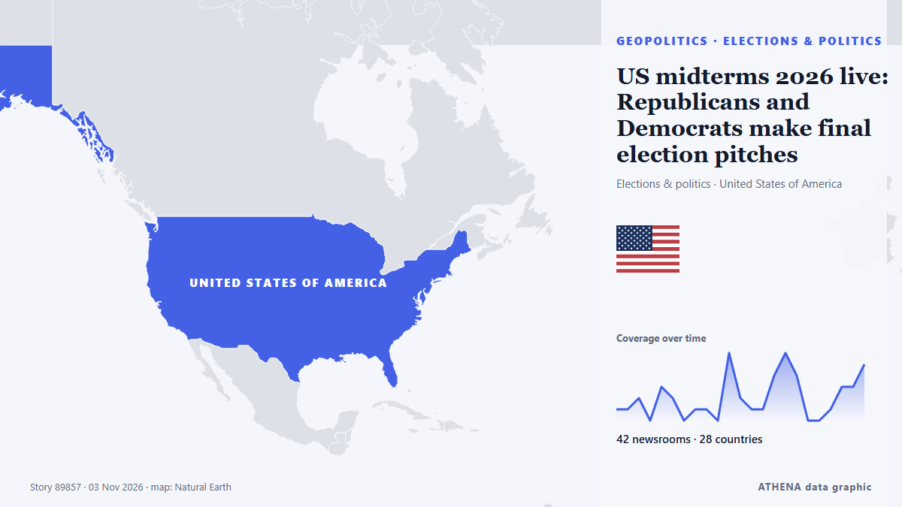

ATHENA Glaux Intelligences — Inteligencia informativa global — cada cifra explicada
Noticias del mundo, contrastadas entre países
ATHENA Glaux sigue cientos de medios de todo el mundo y agrupa sus informaciones en acontecimientos. De cada uno ve cuántos medios de cuántos países lo publicaron, quién fue el primero y una puntuación de riesgo con sus motivos — actualizado cada 10 minutos, en siete idiomas.
En directo de las noticiasHoax bomb threats disrupt flights in Europe92 medios · 40 países · Riesgo 4.8 · Fuentes: Rappler, Simple Flying

GeopolíticaUS midterms 2026 live: Republicans and Democrats make final election pitches
Publicado por 42 medios de 28 países desde el 1 nov. Primero en informar: Al Jazeera English. ATHENA califica el riesgo en 3.5/10 (moderado), con un 91 % de confianza.
Los titulares se muestran en inglés, tal como se publicaron.
US delivery of 500 Patriot missiles to Ukraine will span 3 years starting in 2030
NATO Supreme Allied Commander Europe General Alexus Grynkewich said the United States continues to supply Ukraine with Patriot interceptor missiles, as well as weapons packages paid for by European… de Ukrinform (English)

Hoy en cifras
| 06:00 | 709 |
|---|---|
| 07:00 | 479 |
| 08:00 | 1871 |
| 09:00 | 555 |
| 10:00 | 943 |
| 11:00 | 858 |
| 12:00 | 695 |
| 13:00 | 917 |
| 14:00 | 965 |
| 15:00 | 810 |
| 16:00 | 964 |
| 17:00 | 796 |
| 18:00 | 465 |
| 19:00 | 563 |
| 20:00 | 445 |
| 21:00 | 444 |
| 22:00 | 373 |
| 23:00 | 610 |
| 00:00 | 433 |
| 01:00 | 389 |
| 02:00 | 302 |
| 03:00 | 495 |
| 04:00 | 524 |
| 05:00 | 296 |
Riesgo de los eventos de hoy
First polls close in closely watched U.S. midterm elections
The US midterm elections next month could change the course of American politics at home and – and American policy abroad. de The National
Oleshky ceasefire expires, Ukraine evacuates civilians from parts of Kherson region
Nov 1 - Ukraine's military said it evacuated 167 people from threatened areas of southern Kherson region on Sunday as a temporary local ceasefire expired — two days after buses carried residents out… de The Straits Times
Lo más cubierto
- Economía y mercados
Binance hackers used fake job interview in $6.3 bil. attack
53 países · 122 medios - Geopolítica
DOJ sends election monitors to all 50 states amid midterm election voting
35 países · 88 medios
Señales emergentes
- Aumento repentino · Activa ahoraApec
- Nombre nuevo en las noticias · Activa ahoraJesus de Miguel
- Aumento repentino · Activa ahoraMount Everest
- Aumento repentino · Activa ahoraNorth Carolina
- Aumento repentino · Activa ahoraMillions of Americans
Alertas oficiales
- Red notification for tropical cyclone FOUR-26. Population affected by Category 1 (120 km/h) wind speeds or higher is 1.156 million .Red · GDACS ·
- Cyber chief: UK facing AI-powered attacks on critical infrastructure within two yearsadvisory · UK National Cyber Security Centre ·
- M 6.0 - 165 km NW of Port-Olry, VanuatuM6.0 · USGS ·
- M 6.2 - 43 km ESE of Port-Olry, VanuatuM6.2 · USGS ·
ATHENA en Telegram
Únase gratis al grupo ATHENA Glaux y reciba las noticias en cuanto se publican aquí:
- eventos de última hora con riesgo de 6 o más
- un resumen cada hora de los principales eventos
- actualizaciones de los seguimientos de riesgo
- el informe diario cada mañana a las 10:00 (hora de Atenas)
- una perspectiva semanal
- avisos oficiales, señales emergentes y riesgos al alza
Pulse el botón, se abre Telegram, pulse Unirse. Las publicaciones están en inglés; puede silenciar o salir cuando quiera. ¿Sin Telegram? Es gratis en telegram.org.
Seguimiento de riesgos
Más ›Riesgos globales — semana 45, 2026 (2–8 nov) ›
Geopolítica, política y seguridad
Más ›Keisha Lance Bottoms wins Georgia race, becomes first Black woman elected governor of US state
Democrat Keisha Lance Bottoms' win marks a significant shift in Georgia state politics, where Black voters have formed a central part of the Democratic coalition that helped to turn the reliably… de CNA (Channel NewsAsia)
- Diplomacia y cumbres
Kremlin confirms trilateral talks on Ukraine set for Nov 10-11 in Abu Dhabi
- Elecciones y política
Democrat Jon Ossoff wins reelection to US Senate in Georgia
- Elecciones y política
US voters go to polls with midterms serving as referendum on Trump
- Elecciones y política
US midterms: All eyes on crucial Michigan Senate race
Economía, finanzas y mercados
Más ›North Korea warns of stronger response to US ‘hostility’
The powerful sister of North Korea's leader is warning the United States that it will mount a stronger response to Washington's "invariable hostile policy" toward Pyongyang, the state news agency… de NDTV
- Acciones, bonos y mercados
Pierce Brosnan Endorses Callum Turner As Next James Bond As “He’s So Strong”; Josh O’Connor Reacts To Talk Around 007 Casting
- Cripto y activos digitales
Crypto Today: Bitcoin, Ethereum, XRP under pressure as investors pull capital
- Acciones, bonos y mercados
NNPC eyes 10% equity sale, London, New York listings
- Acciones, bonos y mercados
Meta raises $15 billion in five-part US bond sale to fund AI expansion
Comercio, industria e infraestructuras
Más ›Two Ryanair flights from Dublin searched after potential bomb threats
Ryanair appears to be the worst-affected airline as at least 10 similar incidents were reported across Europe. de Evening Standard (London)
- Aviación, tren y carretera
Hoax bomb threats disrupt flights in Europe
- Aviación, tren y carretera
Kazakhstan to Produce 494 Medicines Under $ 862 Million Investment Plan
- Comercio y acuerdos
Trump says US close to trade deal with Canada, Carney says work remains
- Transporte marítimo y puertos
DP World strengthens China–Africa corridor with new shipping link
Energía, recursos y medio ambiente
Más ›METLEN Signs Five-Year US LNG Supply Deal With Shell
Greek energy group METLEN has signed a binding five-year agreement with Shell Global LNG for six liquefied natural gas cargoes a year from 2027, turning an earlier memorandum into a firm supply… de Greek Reporter
- Contaminación y biodiversidad
Mother and daughter dead in suspected grizzly bear attack near Bella Coola
- Petróleo y gas
New Jersey governor warns port operators against importing Russian diesel
- Clima y política climática
CMA CGM, Nike and Gemadept officially launch electric barge in Vietnam
- Petróleo y gas
Shell to sell NWS LNG stake to XRG
Tecnología, IA y ciberseguridad
Más ›Google's use of press by AI chatbot may infringe copyright rules, EU court adviser says
Google's Gemini AI may violate copyright rules when it uses publishers' content to generate answers, an EU court adviser said, while distinguishing that use from AI training. de The Jerusalem Post
- Inteligencia artificial
Anthropic Reports $17 Billion Quarterly Revenue Ahead of IPO
- Ciberseguridad
Supermarket freezers in several European countries hit by apparent cyberattacks
- Ciberseguridad
Europe on alert after supermarket freezers hit by cyber-attacks in 10 countries
- Chips y computación
AMD smashes Q3 consensus on 97% data center growth
Empresas, compañías e inversión
Más ›Canva layoffs: design giant to cut or relocate more than 1,200 jobs in major restructure
Chief executive Melanie Perkins describes job cuts as ‘without doubt the hardest moment in our thirteen-year history’ in email to staff Get our breaking news email, free app or daily news podcast… de The Guardian
- Sectores y riesgos
Major automakers urge US Congress to pass permanent ban on Chinese vehicles
- Quiebras y reestructuraciones
Artists stage flash mobs at scenic spots in Dunhuang, NW China's Gansu
- Fusiones y adquisiciones
StormGeo acquires Portchain to accelerate Just-in-Time voyage optimisation at scale
- Startups e innovación
Von der Leyen: Hormuz closure cost Europe €127 billion
Salud, ciencia e investigación
Más ›Ethiopia attacks kill civilians as health system nears collapse, WHO chief says
The World Health Organization reports that attacks in northern Ethiopia are pushing the region's fragile health system closer to collapse. de ABC News (International)
- Avances
South Carolina elects Democratic senator for first time in almost three decades
- Sistemas de salud
Midterms: Abdul El-Sayed, Mike Rogers face off for Michigan Senate seat
- Descubrimientos científicos
Evidence of red blood cells found in 115-million-year-old dinosaur’s bones
- Investigación médica
Global cervical cancer cases, deaths forecast to rise by 2050: study
Sociedad, derecho y políticas públicas
Más ›Spanish transport minister resigns days after deadly train crash
At least 69 people were killed and dozens injured in the collision south of the capital, Madrid. de BBC News
- Accidentes y emergencias
Footballer dies after on-field collision
- Accidentes y emergencias
Jesus de Miguel's tragic death: Wrong footballer faces racist abuse
- Consumo y sociedad
‘Mogging’ named Collins Dictionary’s Word of Year for 2026
- Tribunales y justicia
Famous man loses bid for injunction to stop reporting of allegations
Deportes
Más ›Photos: Champions League and Tenerife fans pay tribute to De Miguel
CD Tenerife forward Jesus de Miguel died after suffering cardiac arrest following an on-field collision. de Al Jazeera English
- Fórmula 1 y motor
Kansas Elects Its First Democratic Senator in 94 Years
- Juegos Olímpicos y más
NYC Marathon runner, 24, dies after collapsing 2 miles from finish
- Juegos Olímpicos y más
Canada to Bar Russian Hockey Team From World Juniors Over War in Ukraine
- Fútbol
Bayern skeleton crew sink Atletico in Champions League
Cultura, personas y estilo de vida
Más ›Aaron-Roy King, Pang Ron-Pei Jing fall in Hylo Open semi-finals
KUALA LUMPUR: Malaysia's impressive run of winning at least one title at each of the previous three stops of the European swing came to an end after Aaron Tai-Yap Roy King and Hoo Pang Ron-Lai Pei… de New Straits Times
- Cine y televisión
‘The Remarried Empress’ Gets Surprise Early Premiere On Disney+/Hulu
- Cine y televisión
‘India went through a dark phase’: Sachin Tendulkar opens up on captaincy stint
- Realeza y personajes
UK’s King Charles expresses ‘horror’ at ‘monstrous injustice’ of slavery
- Música
My Chemical Romance Leads ‘Parade’ of Reissues Marching Onto Billboard 200 Albums Chart